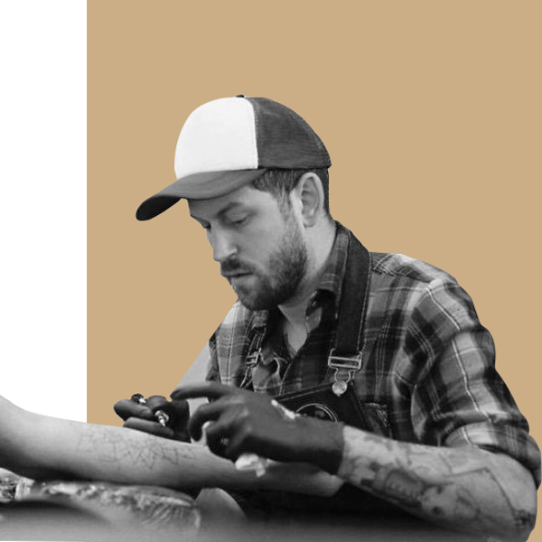

Craigy Lee is a world-renowned tattoo artist from London, England. He visited Wellington for a guest spot in 2011 and then again in 2012, he loved Wellington so much the second time he never left!
Sholto has been making his mark in Wellington with his own take on Japanese tattoo designs for the past few years.

Steph has only been tattooing for a couple of years, but has already gained a loyal and growing customer base for her quirky offbeat designs.

Zoe started her tattoo journey almost by accident when she landed a reception job at a local tattoo studio while she was studying fine art.